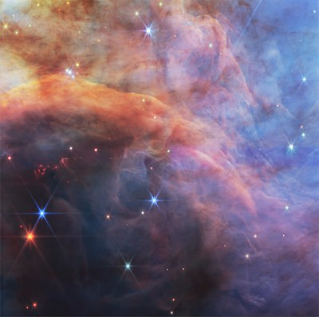
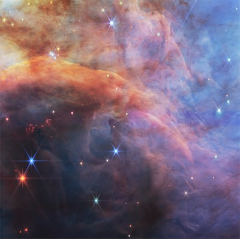

What is the JWST?
The James Webb Space Telescope (JWST) is the most powerful space telescope ever built. Launched in December 2021, it allows scientists to look deeper into space and time than ever before.
Infrared Vision
The JWST uses infrared technology to see through cosmic dust and observe distant galaxies. This allows astronomers to study the formation of stars, planets, and galaxies from the early universe.
Key Discoveries So Far
- Detection of exoplanet atmospheres
- Imaging of the earliest galaxies
- High-resolution views of stellar nurseries
Learn More
NASA JWST Site
JWST First Images
Quick Overview
| Feature | Details |
|---|---|
| Launch Date | December 25, 2021 |
| Orbit | L2 (1.5 million km from Earth) |
| Wavelength | Infrared |
| Main Mirror | 6.5 meters in diameter |
Gallery
 
